La seguridad de la Raspberry Pi es importante. Las brechas en la seguridad pueden dejar la Raspberry Pi abierta a los piratas informáticos que luego pueden usarla con fines maliciosos. El nivel de seguridad que se necesita depende de cómo se vaya a usar la Raspberry Pi. Por ejemplo, si simplemente se está utilizando la Raspberry Pi en la red doméstica, detrás de un router que actua como un firewall, entonces, en principio ya es bastante seguro por defecto.
Sin embargo, si la Raspberry Pi va a estar directamente conectada a Internet, ya sea con una conexión directa (poco probable) o al permitir ciertos protocolos a través del firewall del router (por ejemplo, SSH), entonces se deben realizar algunos cambios de seguridad básicos. Incluso si se está protegido detrás de un firewall, es sensato tomarse la seguridad en serio. Los siguientes consejos describen algunas formas de mejorar la seguridad de la Raspberry Pi.
Tal y como se explica en el anexo-2, en el sistema operativo Raspbian viene el nombre de usuario pi y la contraseña raspberry predeterminados, por lo tanto, si se obtiene acceso a una Raspberry Pi, y estas configuraciones no se han cambiado, se tiene acceso de root a esa Raspberry Pi. Así que lo primero que se debe hacer es cambiar la contraseña. Esto puede hacerse a través de la aplicación raspi-config o desde la línea de comando, ejecutando $ sudo raspi-config, se selecciona la opción 1 y se cambia la contraseña (de hecho, todo lo que raspi-config hace es ejecutar el comando passwd en la línea de comandos, que se puede hacer directamente desde la línea de comando, simplemente se escribe la nueva contraseña y se confirma).
Consejos para crear una contraseña robusta aquí.
Se puede hacer que la Raspberry Pi sea un poco más segura cambiando también el nombre de usuario. Todas las Raspberry vienen con el nombre de usuario predeterminado pi, por tanto si se cambia, se consigue un poco más de seguridad. Para agregar un nuevo usuario se ejecuta: $ sudo adduser nacho, se pedirá una nueva contraseña y el nuevo usuario tendrá el directorio de inicio en /home/nacho.
Para agregar el nuevo usuario al grupo sudo para otorgarles permisos de sudo: $ sudo adduser nacho sudo.
Una vez que se ha confirmado que la nueva cuenta está funcionando, se puede eliminar el usuario pi. Sin embargo, hay que tener en cuenta que con la distribución actual de Raspbian, hay algunos aspectos que requieren que el usuario pi esté presente. Si no se está seguro de si esto va a afectar, es mejor no eliminar al usuario pi. Desde la web oficial de la Raspberry-Pi informan que se está trabajando para reducir la dependencia del usuario pi. Para eliminar el usuario pi, se ejecuta: $ sudo deluser pi.
Este comando eliminará al usuario pi, pero no la carpeta /home/pi. Si es necesario, se puede usar el siguiente comando para eliminar la carpeta de inicio del usuario pi al mismo tiempo,$ sudo deluser -remove-home pi, pero hay que tener en cuenta que los datos de esta carpeta se borrarán de forma permanente, por lo tanto, hay que asegurarse de que los datos necesarios estén almacenados en otro lugar.
Al colocar sudo delante de un comando, se ejecuta como superusuario y, de forma predeterminada, no necesita una contraseña. En general, esto no es un problema. Sin embargo, si la Raspberry-Pi está expuesta a Internet y de alguna manera se consigue acceder a ella (tal vez mediante un exploit de página web, por ejemplo), el atacante podrá cambiar cosas que requieren credenciales de superusuario, a menos que se haya configurado sudo para requerir una contraseña. Para forzar que sudo requiera contraseña, hay que ejecutar la siguiente orden: $ sudo nano /etc/sudoers.d/010_pi-nopasswd, se edita el archivo y se cambia la entrada pi (o los nombres de usuario que tengan derechos de superusuario) a:
pi ALL=(ALL) PASSWD: ALL
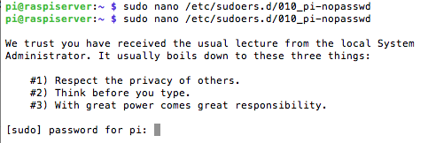
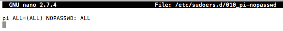
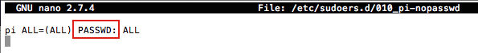
Esto puede ser tan simple como asegurarse de que la versión de Raspbian esté actualizada, ya que una distribución actualizada contiene las últimas actualizaciones de seguridad. Las instrucciones completas se pueden encontrar aquí.
Si se está utilizando SSH para conectarse a la Raspberry Pi, puede valer la pena agregar una tarea periódica con cron que actualice específicamente el servidor ssh. Esta tarea garantizará que tenga las últimas actualizaciones de seguridad SSH, independientemente de su proceso normal de actualización. Se puede encontrar más información sobre la configuración de cron aquí
En principio, no se debe acceder físicamente a un servidor salvo por razones excepcionales (como la actualización o la reparación de hardware, por ejemplo). La mejor manera de gestionar un servidor es remotamente. Sin embargo, este acceso deber hacerse de manera segura, para garantizar que la comunicación no sea interceptada por terceros. El protocolo SSH es la solución para garantizar conexiones remotas seguras. SSH es un protocolo de comunicación que encripta los datos que se intercambian, y es virtualmente imposible romper la privacidad de la comunicación. El acrónimo ssh viene del inglés: Secure SHell. El protocolo ssh es muy versátil, tiene un software cliente que posibilita el acceso a la línea de comandos, permite la transferencia de archivos y la creación de túneles seguros con soporte de comunicación para otros protocolos.
SSH es una forma común de acceder a la Raspberry Pi de forma remota. De forma predeterminada, iniciar sesión con SSH requiere de nombre de usuario y contraseña, y hay formas de hacerlo más seguro, como por ejemplo usar autenticación basada en claves, mejorando la seguridad de nombre de usuario y contraseña. Lo más importante es asegurarse de tener una contraseña muy sólida, esto ayudará a evitar ataques de diccionario o similares.
Para editar la configuración del servidor SSH hay que editar el archivo sshd_config: $ sudo nano /etc/ssh/sshd_config
Otro directorio que hay que tener muy en cuenta es el de hosts conocidos, ya que ahí es donde se configuran las claves criptográficas RSA/DSA. El directorio donde se encuentran los hosts conocidos y las claves públicas es el siguiente: /home/usuario/.ssh/. Este directorio por defecto está oculto (.ssh) y hay un directorio por cada usuario que haya en el sistema operativo y que se conecte a un servidor remoto.
1. Cambiar el puerto por defecto del servidor SSH:
Por defecto los servidores SSH utilizan el puerto 22 para las conexiones. Es recomendable cambiar este número de puerto, para evitar que bots o cibercriminales puedan intentar iniciar sesión, aunque por sí solo esto no proporciona seguridad, sí se puede pasar desapercibido a los escaneos masivos desde Internet. Si por ejemplo se quiere usar el puerto 22445 se debe poner en el fichero de configuración lo siguiente: Port 22445
2. Bloquear el acceso root en las conexiones remotas:
Por defecto, cualquier usuario en el sistema operativo que tenga permisos de Shell, podrá iniciar sesión en el servidor. Además, se debe tener en cuenta que si se tiene activado el usuario root, también podrá conectarse al servidor de forma local o remota, evitando al atacante tener que “adivinar” el nombre de usuario. Por defecto, los bots siempre intentan atacar el puerto 22 y al usuario “root”. Desactivando al propio usuario root, y usando “sudo” para elevar a permisos de superusuario, se evita esto. Además, OpenSSH también permitirá deshabilitar el login del usuario root para dotar al sistema de mayor seguridad: PermitRootLogin no
De esta manera las conexiones root quedarán bloqueadas evitando que usuarios no autorizados puedan realizar ataques de fuerza bruta contra el servidor SSH para adivinar los credenciales del usuario Root. También hay otras opciones en este apartado del archivo sshd_config, como por ejemplo “PermitRootLogin without-password” donde se permite autenticación pero no con usuario y contraseña, sino con claves criptográficas RSA.
Configuraciones de seguridad adicionales3. Existen otras configuraciones recomendadas para evitar las conexiones no deseadas al servidor SSH:
Por ejemplo, un archivo de configuración de sshd_config sería el siguiente:
- Port 22445
- PermitRootLogin no
- LoginGraceTime 30
- MaxAuthTries 3
- MaxStartups 3
- AllowUsers nacho pi
- DenyUsers nacho2
Después de los cambios, se deberá reiniciar el servicio sshd utilizando $ sudo systemctl restart ssh o reiniciar para que los cambios surtan efecto.
En este apartado se muestran los diferentes métodos de autenticación que hay disponibles en el servidor. Principalmente hay dos: usuario y contraseña (algo que sabemos), y también con claves criptográficas (algo que tenemos). No obstante, se puede dotar al sistema de una seguridad adicional, combinando estas autenticaciones con por ejemplo un One Time Password generado por una aplicación como Google Authenticator o Latch OTP. Además, también se puede dotar al sistema de Latch, para evitar que cualquier usuario inicie sesión si no está el “pestillo” abierto.
Si se quiere habilitar el login en el servicio a través del usuario y contraseña del sistema, el archivo de configuración deberá tener esta sentencia: PasswordAuthentication yes
De lo contrario, si se quiere impedir la autenticación a través de usuario/contraseña, y permitir únicamente las conexiones a través de claves criptográficas, se debe indicar no: PasswordAuthentication no
Esta sentencia afecta a todos los usuarios del sistema. Para no quedarse sin acceso al servidor, hay que asegurarse de que la sentencia PubkeyAuthentication esté configurada a “yes”, para permitir el inicio de sesión con claves criptográficas.
Hay otra sentencia relacionada con esto llamada ChallengeResponseAuthentication, si se pone la configuración a “no”, no permitirá las conexiones donde se interactúe con el teclado, por lo que si por ejemplo hay configurado un One Time Password, no se podrá iniciar sesión en el sistema. Si únicamente se va a usar claves criptográficas, se puede poner a “no” sin problemas.
Los pares de claves son dos claves criptográficamente seguras. Una es privada y la otra es pública. Se pueden usar para autenticar un cliente en un servidor SSH (en este caso, el Raspberry Pi). El cliente genera dos claves, que están criptográficamente vinculadas entre sí. La clave privada nunca se debe compartir, pero la clave pública se puede compartir libremente. El servidor SSH usa una copia de la clave pública y, cuando se solicita un enlace, utiliza esta clave para enviar al cliente un mensaje de desafío, que el cliente cifrará con la clave privada. Si el servidor puede usar la clave pública para descifrar este mensaje de vuelta al mensaje de desafío original, entonces la identidad del cliente puede ser confirmada.
La generación del par de claves en Linux se realiza utilizando el comando ssh-keygen en el cliente, las claves se almacenan de forma predeterminada en la carpeta .ssh en el home del usuario directamente. La clave privada se llamará id_rsa y la clave pública asociada se llamará id_rsa.pub. La clave tendrá 2048 bits de longitud, romper el cifrado en una clave de esa longitud llevaría un tiempo extremadamente largo, por lo que es muy seguro. Se pueden crear claves más largas si la situación así lo exige. Hay que tener en cuenta que solo se debe hacer el proceso de generación una vez, si se repite, se sobrescribiran las claves generadas anteriormente. Todo lo que dependa de esas claves antiguas deberá actualizarse a las nuevas claves. Se pedirá una frase de contraseña durante la generación de claves, este es un nivel de seguridad adicional.
Para configurar el acceso con clave pública al servidor, se debe poner la sentencia siguiente a “yes”: PubkeyAuthentication yes
Así es como se activa la configuración con clave pública SSH en el sistema, no obstante, aún hay algunos pasos que se deben hacer para poder conectar al servidor, y es pasar la clave pública al propio equipo. Para hacerlo, se debe permitir (de momento) la autenticación con usuario/contraseña, una vez se terminen todos los pasos se podrá denegar la autenticación con usuario y contraseña sin ningún problema.
Desde el ordenador desde el que se quiere conectar al servidor con claves criptográficas, se deben crear dichas claves y pasárselas al servidor. Para crear unas claves RSA de 4096 bits hay que ejecutar en el cliente SSH la siguiente orden: $ sudo ssh-keygen -t rsa -b 4096
El asistente de generación de estas claves, pregunta si se quiere guardar en /home/usuario/.ssh/id_rsa, se contesta que sí. Posteriormente se permitirá poner a la clave privada una contraseña de paso, de esta forma, si se pierde la llave privada no pasará nada porque no podrán conectarse, debido a que es necesario siempre introducir una contraseña de paso para poder realizar la conexión correctamente.
Una vez que se haya creado la clave pública y privada en el equipo local, se debe enviar la clave pública al servidor SSH donde se quiere conectar, ojo: la clave pública, con el siguiente comando: $ sudo ssh-copy-id usuario@IP_servidor (se agrega la nueva clave pública en el archivo de autorización llamado authorized_keys). También se pueden utilizar otros métodos, ejecutando $ sudo cat id_rsa.pub >> ~/.ssh/authorized_keys, o se puede editar el archivo $ sudo nano ~/.ssh/authorized_keys y pegar la clave. Se pueden tener varias entradas en el archivo authorized_keys, por lo que SSH puede admitir varios clientes.
Hay que tener en cuenta que el archivo authorized_keys necesita los permisos para que el sistema lo lea correctamente, ejecutando: $ sudo chmod 644 ~/.ssh/authorized_keys
En la siguiente conexión, el usuario deberá confirmar que quiere añadir la identidad e introducir las credenciales de login para la cuenta que se quiere utilizar en ese servicio. Por este motivo es importante que en el servidor aún se mantenga la posibilidad de autenticar con usuario/contraseña. Una vez completado este proceso, ya tendría que ser posible hacer inicio de sesión en el equipo sin introducir la contraseña. Hay que acordarse de poner la directiva “PasswordAuthentication no” para no permitir accesos vía usuario y contraseña.
Servidor cuyo objetivo es la centralización del tráfico entre Internet y una red local, y, de esa forma, cada uno de los ordenadores de la red local no tiene necesidad de disponer de una conexión directa a Internet. El servidor proxy también se utiliza para controlar los accesos no permitidos desde Internet hacia la red local. El proxy hace una transformación de las direcciones de entrada y salida. Cuando un ordenador de la red local hace una solicitud o petición web, el proxy la intercepta y la procesa. De esa forma oculta la dirección IP del ordenador real que hace la solicitud y en la petición aparece la IP del proxy.
Lo usual es que el ordenador que hace de servidor proxy tenga al menos dos interfaces de red: una conectada a la red local y la otra conectada a Internet a través de un dispositivo de electrónica de red adecuado. Todos los paquetes con origen en la red local llegan al servidor a través de la interfaz que atiende a la red local y son analizados antes de ser reenviados al exterior a través de la otra interfaz de red.
Servidor situado entre la máquina del usuario y otra red, que normalmente sera Internet, que actúa como barrera de protección para separar las dos redes y como zona caché para acelerar el acceso a páginas web o poder restringir el acceso a contenidos. Almacena las páginas web de los servidores remotos en memorias intermedias para poder servirlas a los clientes bajo demanda.
El uso de un proxy web no introduce retardos en la obtención de la información, ya que si la página solicitada no está en la caché del proxy, se iniciará la búsqueda normal rápidamente, y si la página se encuentra en la memoria caché, la página se sirve con la velocidad de conexión de la red local, que siempre es superior a la de Internet.
En general un proxy puede realizar las siguientes funciones:
Otras funciones importantes de los proxy son:
Además de la función de intermediario entre una red local e Internet y agilizar las conexiones mediante la caché, los proxy disponen de otras funcionalidades directamente relacionadas con temas de seguridad. Entre ellas:
El servidor proxy de libre distribución más usado es Squid, basado en software libre GNU/Linux, aunque está disponible en varias plataformas, se puede encontrar una versión para windows aquí.
El primer paso es instalar el paquete mediante el comando: $ sudo apt-get install squid
Al instalar la herramienta se generan una serie de archivos y directorios:
El archivo de configuración de Squid es /etc/squid/squid.conf, pero es enorme con más de mil lineas de código, por lo tanto se recomienda hacer una copia de seguridad del original y trabajar con una copia adecuada a las necesidades de cada usuario, ejecutando: $ sudo cp /etc/squid/squid.conf /etc/squid.conf.bak
Una configuración básica debe de incluir, al menos, los siguientes parámetros:
acl. Lista de control del acceso, el parámetro ACL permite:
A continuación, a cada ACL creada se le hace corresponder una Regla de Control de Acceso (http_access) que es la que permite o deniega las acciones definidas en la ACL. La sintaxis es variable. Estos son algunos de los formatos más utilizados:
donde:
http_access. Regla de control de acceso: La regla de control de acceso indica si se permite o deniega el acceso a Squid para hacer peticiones HTTP. Actúa siempre sobre una lista de control de acceso permitiendo o denegando la situación definida en ella. La sintaxis es: http_access [ deny / allow ] [ lista_control_acceso ...]
Logs. Registro de logs: Squid utiliza diferentes archivos para realizar el registro de actividad:
Un ejemplo básico del archivo de configuración puede ser el siguiente:
- cache_effective_user proxy
- cache_effective_group proxy
- http_port 3128
- cache_mem 500 MB
- cache_dir ufs /var/spool/squid/ 500 16 256
- visible_hostname nombreservidor
- access_log /var/log/squid/access.log squid
- cache_log /var/log/squid/cache.log
Arranque y parada de Squid. Al instalar squid queda ejecutandose. Ahora se ha crear la estructura necesaria para la cache del servicio. Esto hay que hacerlo a squid parado. Por otra parte hay que activar en el archivo de configuración la directiva que especifica donde esta ubicada la cache y su tamaño. Para crear la cache ejecutar el siguiente comando sólo la primera vez: $ sudo /usr/sbin/squid -z. La opción -z crea los directorios de la caché.
Siempre que se hagan modificaciones en el archivo de configuración se debe ejecutar la sigiente orden para validar la configuración de Squid, no debe dar ningún error al ejecutar la orden:$ sudo squid -k parse.Si no se ejecuta correctamente hay que comprobar los permisos de todos los directorios de caché y de logs dados en el archivo de configuración.
A continuación arrancar el servicio utilizando la orden siguiente:$ sudo service squid start (ó $ sudo systemctl start squid).
Si se necesita reiniciar para probar cambios hechos en la configuración, ejecutar:$ sudo service squid restart (ó $ sudo systemctl restart squid). Asimismo se puede comprobar si el servicio está iniciado o detenido con la orden:$ sudo service squid status
Se puede comprobar que squid se esta ejecutando y escuchando peticiones en el puerto 3128 con la orden: $ sudo netstat -atunp | grep squid
Resumen capturas pasos de instalación y puesta en marcha de SQUID
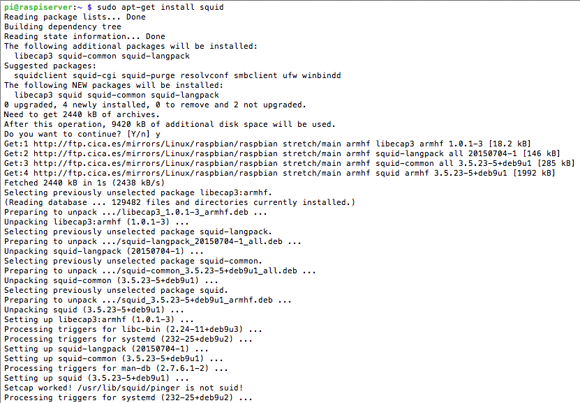
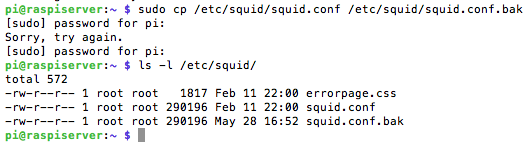
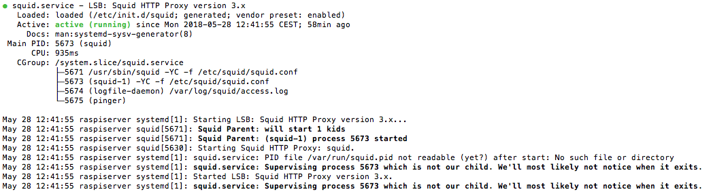
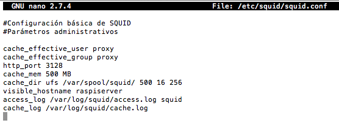
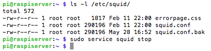
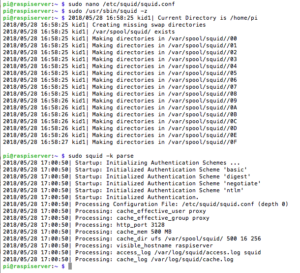
No basta con que el servidor esté correctamente instalado y configurado. También es imperativo que pueda ser controlado y supervisado.
Una tarea fundamental cuando se administran servidores, es la monitorización de logs. Esta tarea puede resultar especialmente engorrosa cuando hay que administrar muchos servidores, o simplemente porque no se dispone suficiente tiempo para ello. Para hacer esta tarea un poco menos pesada se pueden utilizar herramientas como logwatch, con la que se obtiene una visión global de lo que ha estado pasando en el sistema durante un periodo de tiempo determinado.
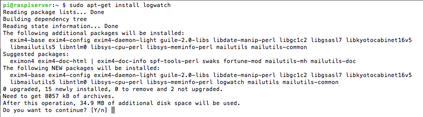
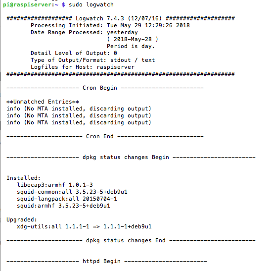
El programa muestra una gran cantidad de información (en función de la cantidad de servicios que haya escuchando y de la cantidad de logs que se esten generando) en texto plano por la salida estándar. Los parámetros por defecto se pueden consultar en /usr/share/logwatch/default.conf/logwatch.conf.Se puede modificar este comportamiento por defecto de dos maneras:
Las opciones que probablemente sean susceptibles de ser modificadas a gusto del usuario serán las siguientes:
La herramienta Munin permite monitorizar diversos parámetros de uno o varios sistemas, por ejemplo, el estado y carga de los servicios, temperaturas, espacio en disco, etc. munin funciona según una arquitectura cliente-servidor, en que un sistema servidor recoge y organiza datos recibidos de varios sistemas clientes. Para monitorizar sólo un servidor, debe instalarse y configurarse los paquetes cliente y servidor en el mismo sistema. Las siguientes órdenes instalan ambos paquetes.
$ sudo apt-get install munin (para el servidor ya incluye munin-node).
$ sudo apt-get install munin-node munin-plugins-core munin-plugins-extra (para el cliente con algunos extras)
Ficheros de configuración: Munin cuenta con varios ficheros y directorios que hay que conocer:
Configuración cliente: La configuración del sistema cliente consiste en añadir la dirección del servidor, a la lista de direcciones que pueden establecer conexión con el cliente. La dirección debe añadirse en formato de expresión regular. En este caso, como el cliente y el servidor es lo mismo, es suficiente añadir la dirección 127.0.0.1. Esta configuración debe efectuarse en el archivo /etc/munin/munin-node.conf:
Servidor: En el servidor deben añadirse a la configuración las direcciones de los clientes a contactar, lo que puede hacerse en el archivo /etc/munin/munin.conf:
Esta página forma parte del proyecto Mini servidor para prácticas ASIR por Nacho López Espert